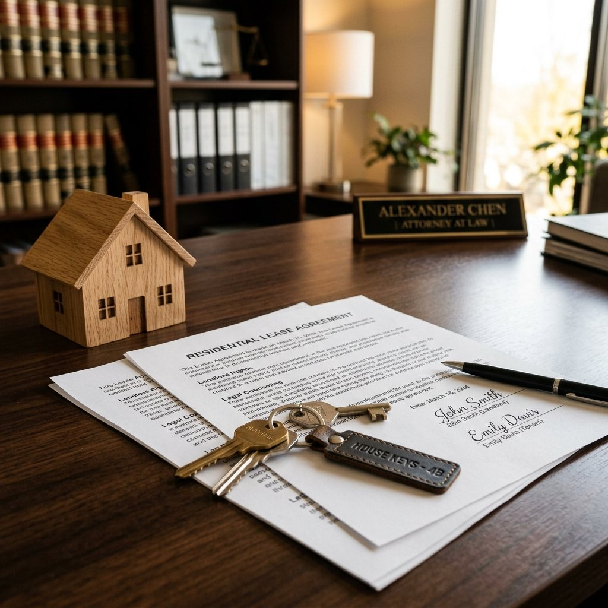

Sabemos que la experiencia de arrendar un inmueble puede pasar de ser una fuente de ingresos a UNA VERDADERA PESADILLA cuando el inquilino INCUMPLE EL CONTRATO, dejando de pagar el canon de arrendamiento y negándose a entregar su propiedad. La incertidumbre, la presión de deudas, el estrés y la frustración son sentimientos comunes en estas situaciones.
Pero permítanos decirle algo crucial: la ley está de su lado, y existe una ruta clara y efectiva para RECUPERAR SU INMUEBLE y todo lo que le adeudan.
En la Sociedad Grupo Jurídico Legal de Colombia S.A.S., le brindaremos las herramientas y el conocimiento para transformar su preocupación en una victoria legal, actuando con inteligencia, agilidad y determinación.
Este blog es su GUÍA ESTRATÉGICA para enfrentar a inquilinos incumplidos en Colombia. Prepárese para entender sus derechos y las acciones legales que le permitirán restablecer el orden y proteger su patrimonio.
El Marco Legal que Protege su Inversión en Colombia
En Colombia, las relaciones de arrendamiento están reguladas por un marco legal robusto y complejo. Las normativas principales que rigen estas situaciones son:
- El Código Civil.
- La Ley 820 de 2003, específicamente diseñada para proteger tanto a arrendadores como a arrendatarios en contratos de vivienda urbana.
- El Código General del Proceso (Ley 1564 de 2012), que establece los procedimientos judiciales para la restitución de inmuebles.
- Además, el Código de Comercio se aplica a situaciones específicas como los arrendamientos comerciales.
Contar con el respaldo de un abogado especializado es fundamental no solo para asegurar el cumplimiento de estas leyes, sino para proteger sus intereses y evitar futuras complicaciones.
Alternativas Estratégicas: Del Acuerdo Amistoso a la Acción Judicial Contundente
Cuando un inquilino incumple, es vital actuar con estrategia. Existen diferentes caminos, y la elección del más adecuado puede agilizar la solución y minimizar sus pérdidas.
Paso 1: La Vía Amistosa y Extrajudicial (La Negociación Inteligente)
Antes de iniciar un proceso judicial, siempre es recomendable intentar un acuerdo. Esta es una fase estratégica donde una comunicación adecuada puede evitar litigios prolongados.
- Comunicación Directa y Formal: Envíe una comunicación escrita de terminación del contrato, indicando claramente la causa del incumplimiento (por ejemplo, falta de pago) y solicitando la entrega voluntaria del inmueble. Aunque no tiene una formalidad especial, es crucial que sea por escrito para que sirva como prueba en un eventual proceso judicial.
- Acuerdo y Conciliación: Intente un acuerdo directo con el inquilino sobre la fecha de entrega y el pago de las deudas. Si no es posible, acuda a un centro de conciliación, casa de justicia, notaría, defensoría del pueblo o personería municipal. La conciliación no es un requisito obligatorio antes de demandar por restitución, pero puede ser una excelente oportunidad para resolver el conflicto de forma ágil.
Paso 2: La Acción Judicial: El Proceso de Restitución de Inmueble Arrendado (La Batalla Decisiva)
Si el inquilino no entrega voluntariamente el inmueble, es momento de iniciar el PROCESO DE RESTITUCIÓN DE INMUEBLE ARRENDADO. Este es un procedimiento judicial especial y expedito diseñado para que usted, como arrendador, RECUPERE SU PROPIEDAD.
¿Cuándo se puede iniciar este proceso? Este proceso puede presentarse en diversas situaciones de incumplimiento:
- Falta de pago de cánones de arrendamiento, servicios públicos o cuotas de administración.
- Vencimiento del contrato sin que el inquilino desocupe voluntariamente.
- Uso indebido del inmueble o subarriendo no autorizado.
- Ocupación sin contrato o tenencia injustificada.
Requisitos para una Demanda Sólida y Estratégica: Para que su demanda sea admitida y prospere, debe estar blindada legalmente con la siguiente documentación:
- Contrato de arrendamiento: Preferiblemente por escrito. Si fue verbal, necesitará pruebas que demuestren la relación contractual, como testimonios, confesiones o copias de recibos de servicios pagados.
- Notificación de terminación: Si el contrato finalizó por vencimiento del plazo.
- Relación detallada de valores adeudados: Cánones vencidos, servicios públicos, cuotas de administración, e intereses de mora.
- Pruebas del incumplimiento: Recibos impagos, reportes, etc.
- Documentos de propiedad del inmueble: Como el certificado de tradición y libertad.
- Poder debidamente otorgado a su abogado: Un especialista en derecho inmobiliario es clave.
Así se Desarrolla la Estrategia ante el Juzgado:
- Radicación de la Demanda: Su abogado presentará la demanda ante el Juez Civil Municipal competente.
- Admisión y Notificación: El juez admitirá la demanda y ordenará notificar al inquilino para que presente su defensa.
- La Ventaja Estratégica Clave: Si su demanda se fundamenta en la falta de pago, el inquilino no será oído en el proceso a menos que demuestre haber consignado el valor total adeudado o presente los recibos de pago por los últimos tres periodos. Esta es una poderosa herramienta legal que acelera el proceso. Además, si el demandado no se opone en el término establecido, el juez puede proferir sentencia ordenando la restitución.
- Sentencia y Restitución: Si la causa es la mora en el pago del arriendo, el proceso es de única instancia, lo que significa que la sentencia es definitiva y no tiene apelación. Si el inquilino no cumple voluntariamente la orden judicial de entrega, el juez puede ordenar el desalojo forzado con apoyo de la fuerza pública.
Estrategias Adicionales: Cobro de Deudas e Indemnizaciones (La Recuperación Total)
Más allá de la recuperación del inmueble, el proceso judicial le permite exigir el pago de diversas sumas de dinero:
- Cánones de arrendamiento adeudados: El juez condenará al inquilino al pago de todos los cánones pendientes hasta la efectiva entrega del inmueble.
- Cláusula Penal: Si su contrato de arrendamiento incluye una cláusula penal por incumplimiento, el juez puede condenar al inquilino a pagarla. Esta cláusula actúa como una estimación anticipada de los perjuicios. En un caso real, un arrendatario fue condenado a pagar tres cánones de arrendamiento como cláusula penal por su incumplimiento.
- Intereses de mora: Sobre las sumas adeudadas.
- Daños y Perjuicios (Indemnización): La ley permite solicitar el pago de los daños ocasionados por el incumplimiento del arrendatario. La cláusula penal es una forma de cuantificar estos perjuicios de antemano.
- Costas Procesales: El inquilino incumplido será condenado al pago de las costas procesales, que incluyen los gastos del proceso y las agencias en derecho (honorarios del abogado).
Medidas Cautelares: Para asegurar el pago de las deudas, su abogado puede solicitar el EMBARGO Y SECUESTRO de bienes del inquilino, embargo de cuentas, de vehículos, del salario. Si se solicita esta medida, no será obligatorio intentar la conciliación previa, lo que acelera su acción.
Derecho de Retención del Arrendador: Usted tiene el derecho de retener los bienes y muebles del inquilino que se encuentren en el inmueble arrendado, hasta que se cancele la deuda. Sin embargo, es fundamental no disponer de artículos personales como ropa o documentos.
Errores Comunes del Arrendador que debe Evitar (No dé Ventajas al Adversario)
En el fragor de la desesperación, muchos propietarios cometen errores que pueden costarles el caso o, peor aún, derivar en problemas legales para ellos. Evite a toda costa estas prácticas ilegales:
- Cortar servicios públicos (agua, energía).
- Cambiar cerraduras del inmueble.
- Amenazar o acosar al arrendatario.
La única vía segura, legal y efectiva para recuperar su inmueble es el proceso judicial de restitución. Actuar por cuenta propia, fuera de la ley, no solo es contraproducente, sino que puede acarrearle denuncias penales o acciones por PERTURBACIÓN A LA POSESIÓN.
Su Estrategia Ganadora: Actúe con Inteligencia y el Respaldo de Expertos
Como dice el arte de la guerra, "conoce a tu enemigo y conócete a ti mismo y en cien batallas no correrás jamás peligro". En el litigio, esto se traduce en conocer la ley, entender el proceso y contar con el mejor equipo.
Nuestra firma se especializa en derecho inmobiliario y de arrendamiento, ofreciendo soluciones personalizadas con alta especialización y experiencia. Nos comprometemos a proporcionarle un servicio profesional y efectivo que le ahorrará tiempo, dinero y preocupaciones.
Nuestras ventajas son sus ventajas:
- Profesionalismo y Especialización: Conocimiento profundo del derecho colombiano y del litigio estratégico.
- Agilidad en los Procesos: Optimizamos los flujos de trabajo para agilizar al máximo.
- Atención Personalizada y Puntual: Porque cada caso es único y merece nuestra dedicación.
- Alto Porcentaje de Éxito: Dirigimos con eficiencia muchos casos al año, con resultados demostrables.
- Honorarios Económicos Ajustados y Facilidades de Pago: Porque su tranquilidad no tiene que ser una carga financiera adicional.
No permita que UN INQUILINO INCUMPLIDO AMENACE SU PATRIMONIO. Actúe rápidamente una vez se presente el incumplimiento. Conserve todos los documentos del contrato y pagos, serán su mejor evidencia.
¡Es Tiempo de Tomar Acción! Su Justicia Comienza Ahora.
¿Tiene dudas o necesita iniciar un proceso de restitución?
En la Sociedad GRUPO JURÍDICO LEGAL DE COLOMBIA S.A.S. www.tujusticia.org, estamos listos para ser su mejor opción y encontrar la solución legal más adecuada y efectiva para su caso.
Contáctenos hoy mismo para una consulta gratis, vía WhatsApp y un abogado experto le atenderá a la mayor brevedad posible.
¡Juntos, lucharemos por sus intereses y conseguiremos lo difícil!